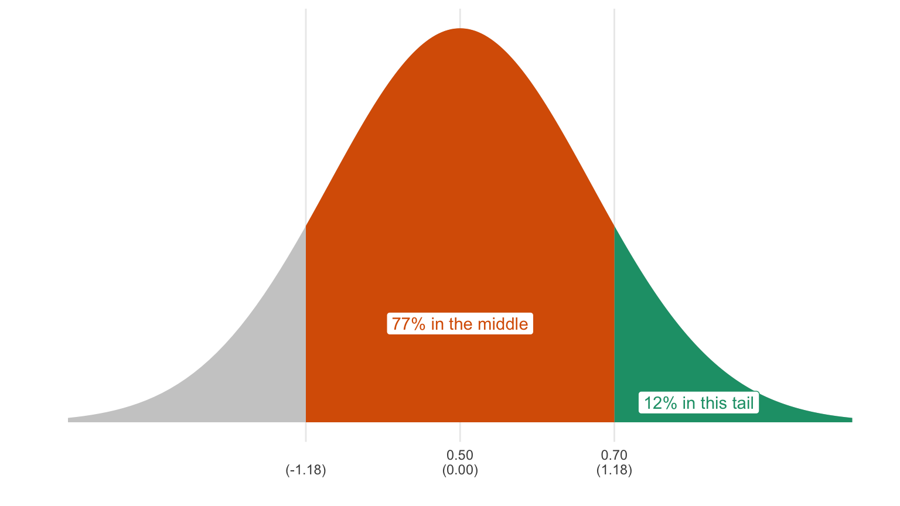

Chapter 3 Histograms in R
3.1 NOMINATE Data
Now that you have some understanding of histograms and practice with drawing histograms by hand let’s move to RStudio and try to answer one of the questions we asked at the begining of this handout: Has congress become more polarized? It turns out, this question interested Keith T. Poole and Howard Rosenthal as well. Using the voting patterns of members of congress (MCs), Poole and Rosenthal created a measure of individual MC ideology, called a DW-NOMINATE score (more information is available at voteview.com).
We can use histograms of these data to visually assess the degree of polarization in the legislature. The data set nominate.csv includes the 100th through the 115th Congresses and contains a variable called ideology that quantifies a representative’s ideology, putting it on a comparable, numeric scale.
These data are at the legislator-Congress level, so that each row in the data set represents an individual legislator in a particular Congress. More negative values indicate a more liberal representative. More positive values indicate a more conservative representative. For example, Ron Paul is one of the most conservative representatives in the data set with a score of about 0.86. Dennis Kucinich is among the most liberal and has a score of about -0.58. Let’s assume that these data are accurate reflections of MC ideology.
To get started, let’s load the (cleaned) data (directly from the web, in this case).
# load packages
library(tidyverse) # load tidyverse package, which has lots of useful functions.
# load data
nominate_df <- read_csv("https://pos3713.github.io/data/nominate.csv")
# note: for the sake of simplicity we're linking to the file directly on the course site.
# feel free to download it, add it to the RStudio Cloud project, and use read_csv("nominate.csv").
glimpse(nominate_df) # use glimpse() to see what your data frame looks like.## Rows: 7,992
## Columns: 7
## $ congress <dbl> 100, 100, 100, 100, 100, 100, 100, 100, 100, 100, 100, 100, 1…
## $ chamber <chr> "House", "House", "House", "House", "House", "House", "House"…
## $ state <chr> "AL", "AL", "AL", "AL", "AL", "AL", "AL", "AK", "AZ", "AZ", "…
## $ district <dbl> 2, 4, 3, 5, 6, 1, 7, 1, 2, 3, 5, 4, 1, 3, 1, 4, 2, 36, 10, 29…
## $ party <chr> "Republican", "Democrat", "Democrat", "Democrat", "Democrat",…
## $ name <chr> "DICKINSON, William Louis", "BEVILL, Tom", "NICHOLS, William …
## $ ideology <dbl> 0.398, -0.213, -0.042, -0.175, -0.060, 0.373, -0.085, 0.283, …The variables have very descriptive names, but if you need more information, look in the codebook.
3.2 Histograms: geom_histogram()
To draw our histogram we’ll use R package ggplot2, which is part of tidyverse. When we ran library(tidyverse), it automatically loaded ggplot2. If we hadn’t already run library(tidyverse), we could also run library(ggplot2).
Though ggplot2 is a complex package, we’ll get some sense of how it works this semester. It is well-documented online, but keep in mind that I’ve chosen the course content to balance simplicity and utility.
3.2.1 The Three Critical Components
There are three critical components to each plot created using ggplot2, which we’ll refer to as a “ggplot.”
- the data: The data frame that contains the variable(s) you want to visualize.
- the aesthetics: the relationship between the variables in the data set and the aesthetics of the plotted objects–location, color, size, shape, etc.
- the geometry: the type of plot (e.g., histogram, scatterplot, bar graph, line graph, etc). For now, we’re focused on histograms.
There are other components, such as scales, statistics, and coordinate systems, that we might use to make more complicated plots. However, we can usuall use the “three critical components” (data aesthetics, and geometry) to build the plot we want.
3.2.2 Drawing a Histogram
Now that we’re all set up let’s draw a histogram.
- data: the first argument to
ggplot(). Because the variable we want to plot,ideology, is a variable contained in the data framenominate_df, we usenominate_dfas the first argument. - aesthetic: the second argument to
ggplot(). Because we want to create a histogram, we wantideologyto correspond to the location along the horizontal-axis. To create this correspondence, we useaes(x = ideology)as the second argument. Notice thataes()is a function itself with its own arguments. In this case (and in most others),aes(...)is also the second argument toggplot(). - geometry: added to
ggplot(...)with+. Because we want a histogram, we usegeom_histogram(). Notice thatgeom_histogram()is itself a function, and that we’re giving it no arguments. It’s weird to add a function to another function with+; nothing else inRworks quite like this. It might help to think this “addition” to yourggplot()as an attachment to your ggplot (data and aesthetics). As we’ll see later, there are optional “additions” we can use beyond the geometry.
# specify data and aesthetic, then add the geometry
ggplot(nominate_df, aes(x = ideology)) + geom_histogram()
This histogram probably isn’t too far off from what you would expect to see. We have a grouping of Democrats (presumably) on the left and a grouping of Republicans (again, presumably) on the right. You could probably come up with a model that explains why there are few politicians in the center.
Exercise 3.1 In your own project, reproduce the histogram above. Identity at least one interesting feature of the data. Write a two or three sentences describing a model that explains that feature (i.e., speculate about why the data look the way they do).
3.2.3 Counts and Densities
I’ve argued that we should use density (not counts or percentages) as the height of our bars (i.e., the vertical axis). But notice that geom_histogram() uses counts by default.
This is important, because if the bin widths of the histograms are not equal, then counts create a misleading histogram. However, if the bin widths are equal, then counts and densities produce identically shaped histograms. (The vertical axis has a different scale, though.) Becaue we tend to use equal bin widths in practice, it often doesn’t matter whether we use counts or densities.
That said, it helps if we can become fluent in thinking about densities, because we use them heavily later in the class.
If you want to change the default behavior, add y = ..density.. to the aesthetics. (By default, geom_histogram() sets y = ..count...)
# specify data and aesthetic, then add the geometry
ggplot(nominate_df, aes(x = ideology, y = ..density..)) + geom_histogram()
Exercise 3.2 List and describe the three critical components of a ggplot.
Exercise 3.3 In the following snippet of code, label the data, the aesthetics, and the geometry: ggplot(nominate_df, aes(x = ideology)) + geom_histogram(). How many functions are there? How many arguments have we supplied to each function? Which argments are named and unnamed?
Exercise 3.4 In this section, we’ve seen three new functions: ggplot(), aes(), and geom_histogram(). In your own words, describe what it does and how to use it.
3.3 Filtering: filter()
Above, we plot the distribution of ideology scores for 16 different Congresses (the 100th through the 115th) in the same histogram.
Let’s create a histogram for the 100th Congress only.
To do this, first create a dataset that contains only observations from the 100th Congress.
To create a subset of nominate_df that only contains only the 100th Congress, use the filter() function (part of tidyverse!). The first argument to filter() is the data frame to be filtered, and the second argument is a logical statement that identifies the cases to keep.
# filter the 100th congress
nominate100_df <- filter(nominate_df, congress == 100)
# keep only obs. where the variable congress equals exactly 100
# quick look
glimpse(nominate100_df)## Rows: 441
## Columns: 7
## $ congress <dbl> 100, 100, 100, 100, 100, 100, 100, 100, 100, 100, 100, 100, 1…
## $ chamber <chr> "House", "House", "House", "House", "House", "House", "House"…
## $ state <chr> "AL", "AL", "AL", "AL", "AL", "AL", "AL", "AK", "AZ", "AZ", "…
## $ district <dbl> 2, 4, 3, 5, 6, 1, 7, 1, 2, 3, 5, 4, 1, 3, 1, 4, 2, 36, 10, 29…
## $ party <chr> "Republican", "Democrat", "Democrat", "Democrat", "Democrat",…
## $ name <chr> "DICKINSON, William Louis", "BEVILL, Tom", "NICHOLS, William …
## $ ideology <dbl> 0.398, -0.213, -0.042, -0.175, -0.060, 0.373, -0.085, 0.283, …Use this new data frame to draw the histgram.
# create histogram for 100th congress
ggplot(nominate100_df, aes(x = ideology)) + geom_histogram()
Repeat that process, but for the 115th Congress.
# subset data to only 115th congress
nominate115_df <- filter(nominate_df, congress == 115)
# quick look
glimpse(nominate115_df)## Rows: 450
## Columns: 7
## $ congress <dbl> 115, 115, 115, 115, 115, 115, 115, 115, 115, 115, 115, 115, 1…
## $ chamber <chr> "House", "House", "House", "House", "House", "House", "House"…
## $ state <chr> "AL", "AL", "AL", "AL", "AL", "AL", "AL", "AK", "AZ", "AZ", "…
## $ district <dbl> 3, 7, 2, 5, 1, 6, 4, 1, 8, 3, 4, 6, 9, 2, 7, 5, 1, 8, 1, 3, 2…
## $ party <chr> "Republican", "Democrat", "Republican", "Republican", "Republ…
## $ name <chr> "ROGERS, Mike Dennis", "SEWELL, Terri", "ROBY, Martha", "BROO…
## $ ideology <dbl> 0.359, -0.393, 0.362, 0.645, 0.610, 0.693, 0.376, 0.283, 0.74…# create histogram
ggplot(nominate115_df, aes(x = ideology)) + geom_histogram()
Exercise 3.5 Reproduce the histograms for the 100th and 115th Congresses above. Identify an important difference between the two? Is the House becoming more polarized over time?
Exercise 3.6 Explain what the filter() function does and how to use it. What are the first and second arguments? What type of object does it return? Use help(filter) for the details.
3.4 Faceting: facet_wrap()
Let’s investigate this divergence in the parties more carefully.
Is the left hump actually Democrats? Is the right hump actually Republicans? Let’s draw a separate histogram for Democrats and Republicans.
We accomplished something similar above using filter() to create separate datasets for each Congress. But there’s an easier way!
Instead of creating a separate dataset for each party, let’s just add a facet to the plot. A facet simply breaks the dataset into subsets and creates one plot for each subset.
Create a facet by adding the function facet_wrap() to the plot. You need to specify the faceting variable as an argument to the facet_wrap() function, but you cannot supply it directly. Instead, you need to wrap the faceting variable in the vars() function. In this case, we’ll facet by party, adding + facet_wrap(vars(party)) (i.e., “create a facet by the variable party”) to the ggplot we’ve been using.
# build histogram
ggplot(nominate100_df, aes(x = ideology)) +
geom_histogram() +
facet_wrap(vars(party))
Indeed, the left hump is Democrats and the right hump is Republicans.
Exercise 3.7 What does a facet do to a plot?
Exercise 3.8 Explain what the facet_wrap() function does and how to use it.
Exercise 3.9 Suppose you added + facet_wrap(party). Would that work? What is missing?
Exercise 3.10 Suppose you added + facet_wrap(vars(state)) to ggplot(nominate100_df, aes(x = ideology)) + geom_histogram(). Without trying it, predict what will happen. Try it.
Exercise 3.11 Difficult. facet_grid() offers an alternative method to faceting. How is it different from facet_wrap()? You might find this documentation helpful. With an example, show how to use facet_grid().
3.5 Density Plots: geom_density()
FPP sometimes uses a rough sketch of a histogram using a smooth curve rather than a complete histogram with vertical bars.
For our purposes, a density plot is a smooth curve that approximates a histogram. As an example, here’s a plot with both the smoothed curve (in red) and the actual bars (in black). You can see that the smooth curve roughly approximates the shape of the histogram.
There’s a complicated mathematical procedure that produces the smoothed curve, but it’s not much different than simply approximating the shape with a pencil.

We can easily create a density plot rather than a histogram by using geom_density() as the geometry rather than geom_histogram().
# create density plot
ggplot(nominate100_df, aes(x = ideology)) +
geom_density()
Exercise 3.12 How is a density plot similar to and different from a histogram? (The proceedure for estimating the density is actually complicated, but I care about the intuition.)
Exercise 3.13 What does the function geom_density() do and how do you use it?
3.6 Color, Fill, and Alpha
3.6.1 Color
A density plot has the advantage it uses less ink. Because of this, we could use color rather than faceting to distinguish Republicans and Democrats.
To distinguish Republicans and Democrats with color, add color = party to the aesthetics.
# build density plot
ggplot(nominate100_df, aes(x = ideology, color = party)) +
geom_density()
This look really good! Since we are most interested in the overlap between the parties, I think this density plot makes more sense for us, so let’s stick with it.
ggplot() apparently doesn’t understand U.S. politics, because it colors Democrats red and Republicans blue-ish. The default colors usually work fine, but here’s a quick fix that we only need for this example if you want to use it.
# build density plot
ggplot(nominate100_df, aes(x = ideology, color = party)) +
geom_density() +
scale_color_manual(values = c("Democrat" = "blue", "Republican" = "red"))
3.6.2 Fill
Instead of coloring the lines differently, you can “fill” the density with different colors. While the color aesthetic represents the color of the line itself, the fill aesthetic represents the fill inside the line.
To distinguish between the parties using fill, add fill = party to the aesthetics.
# build density plot
ggplot(nominate100_df, aes(x = ideology, fill = party)) +
geom_density()
3.6.3 Alpha
Notice that the Republican fill (blue-green) completely covers the Democrat fill (orange-red). But here’s a hint. The alpha argument to geom_density() controls the transparency. alpha = 0 is completely transparent. alpha = 1 is not transparent at all.
# build density plot
ggplot(nominate100_df, aes(x = ideology, fill = party)) +
geom_density(alpha = 0.5)
This slight transparency makes both distributions visible, even when the two overlap.
Exercise 3.14 Explain the difference between the color and fill aesthetics for density plots.
Exercise 3.15 Use color to show the separate distributions of ideology scores for all 15 Congresses. In other words, map the variable congress to the color aesthetic using color = congress. st this useful?
Exercise 3.16 Explain how alpha transparency works and why you might use it. Suppose I used alpha = 0.1 instead of alpha = 0.5 in the plot above. How would the plot change?
3.7 Labels: labs()
By default, ggplot() uses the variable names to label the axes and legend. By default, there is no title, subtitle, or caption.
You will usually want to improve the axis labels and legends. You will sometimes want to add a title, subtitle, and/or caption. Make these changes by adding the labs() function to the plot.
To the labs() function, supply one argument per aesthetic, such as x, y, color, or fill. You can also supply arguments for title, subtitle, or caption if you wish. These argument are character strings (surrounded by quotes), such as "Ideology Score" or "A Density Plot of Ideology Scores for the 100th Congress".
# build density plot
ggplot(nominate100_df, aes(x = ideology, fill = party)) +
geom_density(alpha = 0.5) +
labs(x = "Ideology Score",
y = "Density",
fill = "Party",
title = "A Density Plot of Ideology Scores for the 100th Congress",
subtitle = "There Are Few Moderates in Congress",
caption = "Data Source: DW-NOMINATE from voteview.com")
This plot looks pretty nice.
Exercise 3.17 By default, how does ggplot() label the axes and legends?
Exercise 3.18 How can you change the default labels? How can you add a title, subtitle, or caption?
Exercise 3.19 Explain what the labs() function does and how to use it.
Exercise 3.20 Explain, in as much detail as you can, what each part the last block of code above does.
3.8 Themes: theme_bw() and Others
Use themes to control the overall look of our ggplots. The theme controls elements such as the color of the background, the font family and size, the color and size of the grid, etc.
There are the six themes provided with ggplot2.
| Theme | Description |
|---|---|
theme_grey() |
The signature ggplot2 theme with a grey background and white gridlines, designed to put the data forward yet make comparisons easy. |
theme_bw() |
The classic dark-on-light ggplot2 theme. May work better for presentations displayed with a projector. |
theme_linedraw() |
A theme with only black lines of various widths on white backgrounds, reminiscent of a line drawings. Serves a purpose similar to theme_bw(). |
theme_light() |
A theme similar to theme_linedraw() but with light grey lines and axes, to direct more attention towards the data. |
theme_minimal() |
A minimalist theme with no background annotations. |
theme_classic() |
A classic-looking theme, with x and y axis lines and no gridlines. |
Notice what happens when you add theme_bw() (my favorite!) to the plot.
# build density plot
ggplot(nominate100_df, aes(x = ideology, fill = party)) +
geom_density(alpha = 0.5) +
theme_bw()
If you are interested, the ggthemes package includes several other themes.
| Theme | Description |
|---|---|
theme_economist() |
based on the Economist |
theme_economist_white() |
based on the Economist |
theme_excel() |
based on Excel |
theme_few() |
based on Few’s “Practical Rules for Using Color in Charts” |
theme_fivethirtyeight() |
based on fivethirtyeight.com plots |
theme_gdocs() |
based on Google docs |
theme_igray() |
inverse grey |
theme_pander() |
based on the pander package |
theme_solarized() |
based on the Solarized palette |
theme_solarized_2() |
based on the Solarized palette |
theme_stata() |
based on default Stata graphics |
theme_tufte() |
based on Tufte–minimum ink, maximum data |
theme_wsj() |
based on Wall Street Journal |
Try the the infamous (famously ugly) Excel theme.
# load packages
library(ggthemes) # for additional themes and even more fun!
# build density plot
ggplot(nominate100_df, aes(x = ideology, fill = party)) +
geom_density(alpha = 0.5) +
theme_excel()
Exercise 3.21 What are themes in ggplot2? What do they control/change?
Exercise 3.22 How do you change the theme of a ggplot?
Exercise 3.23 What are a few theme options from ggplot2? From ggthemes?
Exercise 3.24 Try a few different themes from both ggplot2 and ggthemes. What is your favorite and why?
3.9 Exercises
Exercise 3.25 Putting It All Together Create a density plot mapping ideology to x and color or fill to party. Facet by congress. This should generate separate density plots for each Congress. Adjust the alpha transparency appropriately. Add a nice title and axis labels. If you want to fix the misleading default colors and/or fills, you can add scale_color_manual(values = c("Democrat" = "blue", "Republican" = "red")) and/or scale_fill_manual(values = c("Democrat" = "blue", "Republican" = "red")), respectively, to your ggplot code (the first controls the color; the second controls the fill). Answer the following questions:
- Interpret the ideology histograms. How have the distributions of MC ideology shifted? Is Congress becoming more polarized?
- Look at the histograms for each party in the 100th and 115th congress. Roughly, want is the average (or “typical”) ideology for each party. Has one party shifted away from the center (i.e., zero) more than the other between the 100th and 115th?
- Has the variation within each party changed? Have Democrats become more, or less ideologically heterogenous? Republicans?
- Think back to your model of congressional polarization. How well does it fit with our final histogram? Are there any features of the figure that are incompatible with your model? How could you update your model to account for these?
- Based on these data, formulate a hypothesis predicting the distribution of ideology in the public. Given that DW-NOMINATE scores are not available for every citizen in the country, what sort of data could you gather to evaluate your claim?
Solution
If you rely on this solution, make sure you can explain the purpose of each line. See what changes if you take that line out, for example.
## Warning: Removed 25 rows containing non-finite values (stat_density).